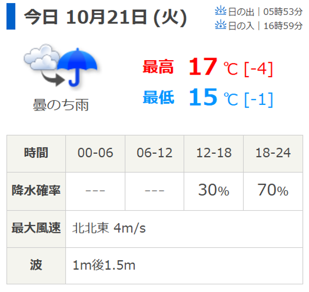
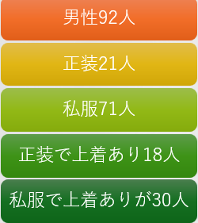
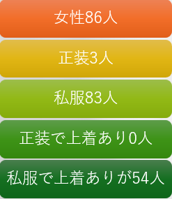

最近AIにcssを作らせて遊ぶのにはまっている水野です。
最近寒くなってきたので上着を羽織る人が増えてきましたね。
今回は5班で調査した上着の有無について、移動観察の観点から観察内容をまとめました。
観察条件
今回は男女ごとに正装か私服かを男女ごとで調査し、正装の人と私服の人がそれぞれ上着を羽織っているかを計測しました。
スタート地点は我らが神奈川大学みなとみらいキャンパス、そこからOKみなとみらい店入口までを観測範囲としています。
気候条件は以下の通り。

尚、赤子は計測対象外としています。
観測による結果
観測の結果は以下の通りでした。

少しの画像ズレは多めに見てください。女性の正装で上着着用が0人という結果でした。
考察とまとめ
・
・